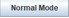
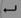

Introduction
The Soft Keyboard project was initiated with the aim of providing MPS-afflicted people with special mathematics input functionality. This is especially useful for students who need to use a computer to complete maths homework and exams, or even need special assistance from another person to do so.
Features
-
Normal Mode
Normal Mode is the default mode of Soft Keyboard. There are no special features in this mode.
-
Math Mode
Math Mode allows for easier input of mathematical symbols and equations. To switch to Math Mode, click the top-left button  such that it changes from “Normal Mode” to “Math Mode”.
Pressing  in this mode will automatically open Microsoft’s Equation Editor.
-
Change Background
Pressing the top-right button will change the background colours of the Soft Keyboard.
Change Size
Getting Started
- Install Java here.
- Download SoftKeyboard.jar here.
- Double click on SoftKeyboard.jar to run it.
- Open Microsoft Word/Excel/OneNote.